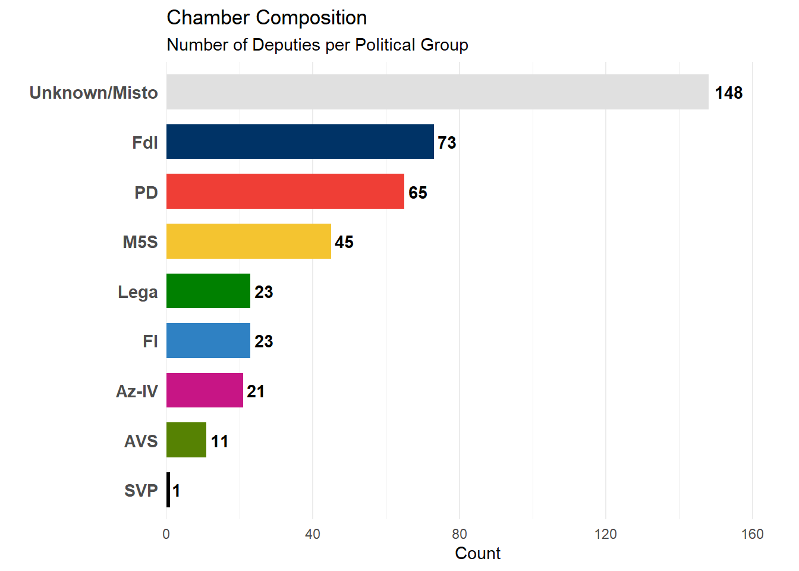
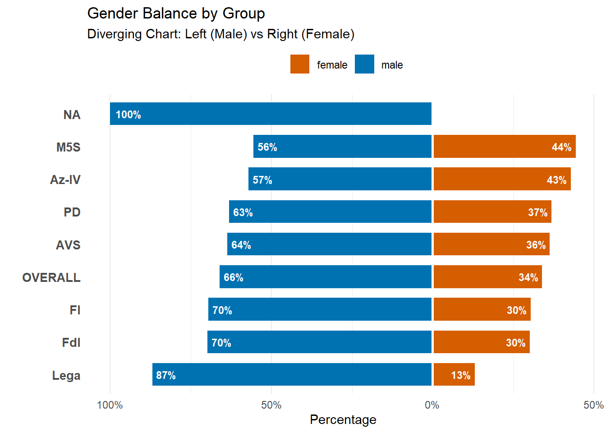
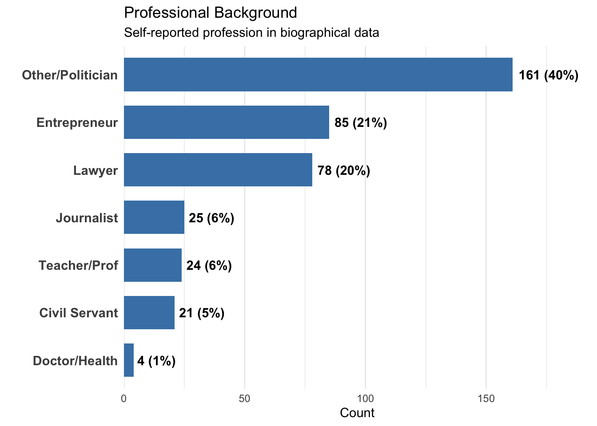
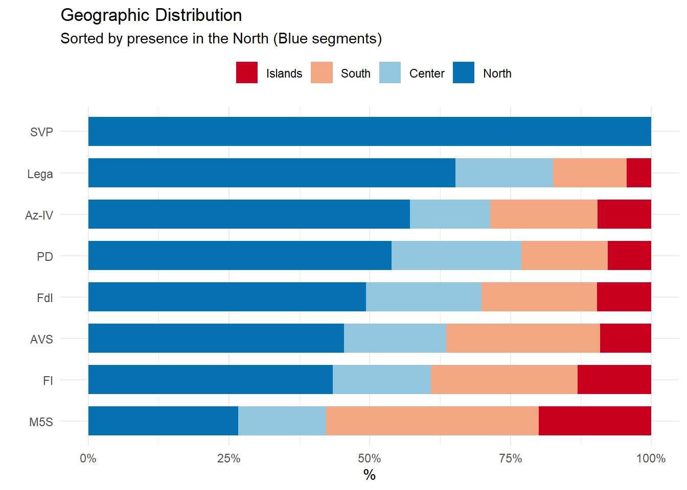
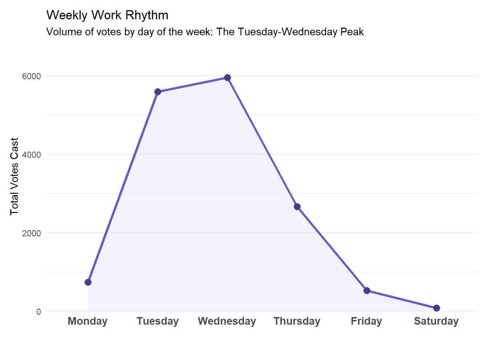
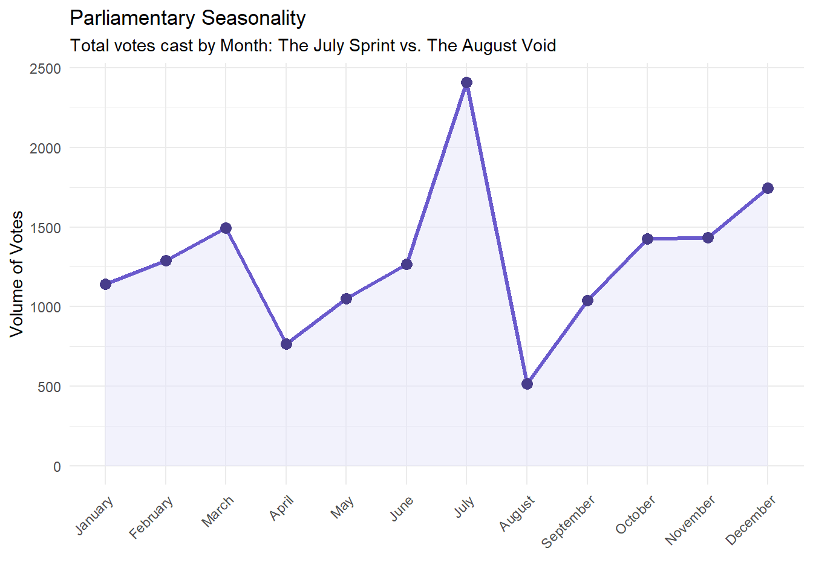
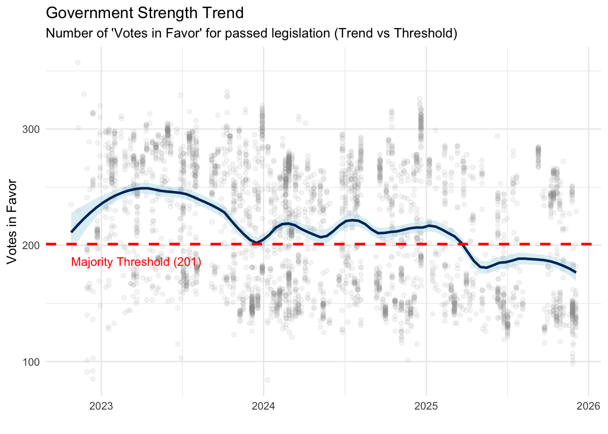
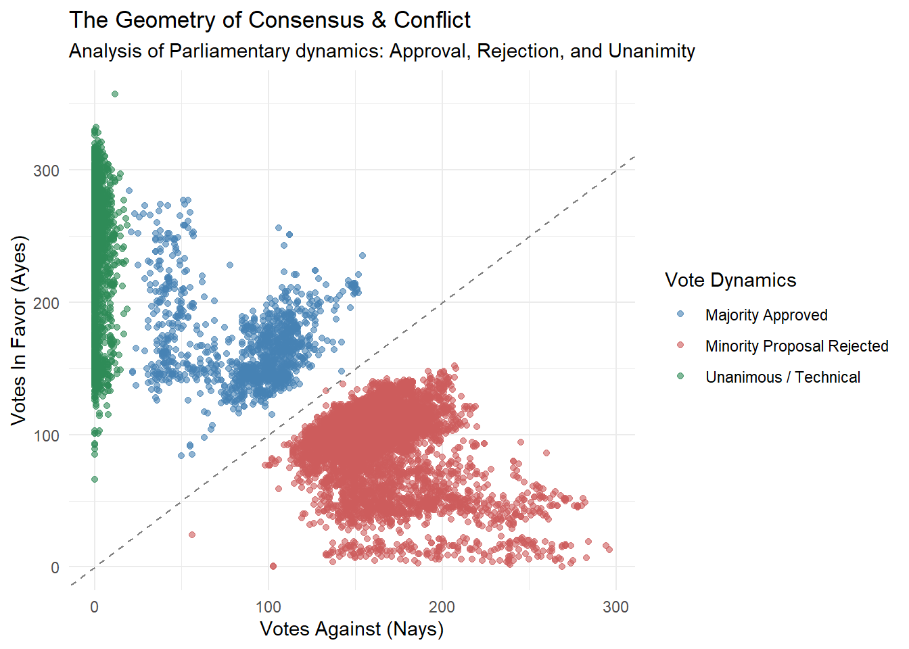

The following section loads the necessary R libraries for data manipulation and visualization, and executes the parsing of the raw Linked Open Data (RDF) provided by the Chamber of Deputies, transforming the semantic triplets into structured relational datasets.
Code
# --- 1. LIBRARIES ---# Loading essential packages for data manipulation (tidyverse) and dates (lubridate)library(tidyverse)library(stringr)library(lubridate)library(ggplot2)library(scales)# --- 2. PARSING FUNCTION ---# Custom function to parse the raw RDF/XML files.# Since the files are structured as N-Triples, we use Regex to extract Subject, Predicate, and Object.read_camera_rdf <-function(file_path) { raw_lines <-read_lines(file_path)tibble(raw = raw_lines) |>filter(raw !="") |># Regex extraction of the 3 RDF componentsextract(raw, into =c("soggetto_url", "predicato_url", "oggetto_raw"),regex ="^<([^>]+)>\\s+<([^>]+)>\\s+(.+)$", remove =FALSE) |>mutate(# Clean IDs and Valuesid =str_extract(soggetto_url, "[^/]+$"),variable =str_extract(predicato_url, "[^/#]+$"),value = oggetto_raw |>str_remove("\\^\\^.*$") |>str_remove(" \\.$") |>str_remove_all("\"") |>str_trim() ) |>select(id, variable, value)}# --- 3. LOAD RAW DATASETS ---# A. VOTING RECORDS (Votazioni)# Contains the outcome of every parliamentary votedf_votazioni <-read_camera_rdf("votazione-19.rdf") |>distinct(id, variable, .keep_all =TRUE) |>pivot_wider(names_from = variable, values_from = value) |>mutate(across(c(votanti, favorevoli, contrari, astenuti), as.numeric)) |>mutate(date =ymd(date))# B. SESSION CALENDAR (Sedute)# Links votes to specific dates and session typesdf_sedute <-read_camera_rdf("seduta-19.rdf") |>distinct(id, variable, .keep_all =TRUE) |>pivot_wider(names_from = variable, values_from = value) |>mutate(date =ymd(date)) |>select(id, date, label) |>rename(id_seduta = id)# C. DEPUTIES REGISTRY (Deputati)# Demographic info (Gender, Age, Profession)df_deputati <-read_camera_rdf("deputato-19.rdf") |>distinct(id, variable, .keep_all =TRUE) |>pivot_wider(names_from = variable, values_from = value) |># Extract numeric ID (e.g. 307471) ignoring the legislature prefixmutate(id_numerico =str_extract(id, "\\d{5,}"))# D. ELECTION RESULTS (Elezioni)# Contains the Electoral List and Constituency for every elected officialdf_elezioni <-read_camera_rdf("elezione-19.rdf") |>distinct(id, variable, .keep_all =TRUE) |>pivot_wider(names_from = variable, values_from = value) |>mutate(id_numerico =str_extract(id, "\\d{5,}"))# E. PARLIAMENTARY GROUPS (Dictionary)# Maps Group IDs to full Party Namesdf_groups_dict <-read_camera_rdf("gruppoParlamentare-19.rdf") |>distinct(id, variable, .keep_all =TRUE) |>pivot_wider(names_from = variable, values_from = value) |>select(id, label) |>mutate(group_code =str_remove(id, "^gr")) |>rename(group_name = label)# --- 4. MASTER DATA PREPARATION (Hybrid Method) ---# Goal: Assign a political party to all 400 deputies.# Strategy: Use Election Lists as primary source, fallback to Current Office if missing.# Step 1: Election Source (Primary)df_source_election <- df_elezioni |>filter(!is.na(lista)) |>select(id_numerico, raw_party_name = lista) |>mutate(source ="Election")# Step 2: Office Source (Fallback)# Extracts group code from the Parliamentary Office URLdf_source_office <- df_deputati |>select(id_numerico, rif_ufficioParlamentare) |>filter(!is.na(rif_ufficioParlamentare)) |>mutate(group_code_extracted =str_extract(rif_ufficioParlamentare, "_(\\d{4})_") |>str_remove_all("_")) |>left_join(df_groups_dict, by =c("group_code_extracted"="group_code")) |>filter(!is.na(group_name)) |>distinct(id_numerico, .keep_all =TRUE) |>select(id_numerico, raw_party_name = group_name) |>mutate(source ="Office_Fallback")# Step 3: Merge & Cleandf_deputati_final <- df_deputati |>distinct(id_numerico, .keep_all =TRUE) |>select(id, id_numerico) |># Join Election Dataleft_join(df_source_election, by ="id_numerico") |>rename(party_election = raw_party_name) |># Join Office Dataleft_join(df_source_office, by ="id_numerico") |>rename(party_office = raw_party_name) |># Coalesce: Take Election if available, otherwise Officemutate(final_party_raw =coalesce(party_election, party_office)) |># Map raw strings to clean Acronymsmutate(party_acronym =case_when(is.na(final_party_raw) ~"Unknown/Misto",str_detect(final_party_raw, regex("FRATELLI D'ITALIA", ignore_case =TRUE)) ~"FdI",str_detect(final_party_raw, regex("DEMOCRATICO", ignore_case =TRUE)) ~"PD",str_detect(final_party_raw, regex("LEGA", ignore_case =TRUE)) ~"Lega",str_detect(final_party_raw, regex("MOVIMENTO", ignore_case =TRUE)) ~"M5S",str_detect(final_party_raw, regex("FORZA ITALIA", ignore_case =TRUE)) ~"FI",str_detect(final_party_raw, regex("AZIONE|CALENDA|VIVA", ignore_case =TRUE)) ~"Az-IV",str_detect(final_party_raw, regex("VERDI|SINISTRA", ignore_case =TRUE)) ~"AVS",str_detect(final_party_raw, regex("MODERATI|NOI", ignore_case =TRUE)) ~"NM",str_detect(final_party_raw, regex("MAIE", ignore_case =TRUE)) ~"MAIE",str_detect(final_party_raw, regex("SVP|PATT|SÜDTIROLER|MINORANZE", ignore_case =TRUE)) ~"SVP",str_detect(final_party_raw, regex("LEGA.*FORZA ITALIA|FRATELLI D'ITALIA.*LEGA", ignore_case =TRUE)) ~"Uninominal (Coalition)",str_detect(final_party_raw, regex("MISTO", ignore_case =TRUE)) ~"Misto",TRUE~"Other" ) )# --- 5. COLOR PALETTE ---# Assigning official colors to each party acronymparty_colors <-c("FdI"="#003366", # Dark Blue"PD"="#EF3E36", # Red"Lega"="#008000", # Green"M5S"="#F4C430", # Yellow"FI"="#2F81C3", # Light Blue"Az-IV"="#C71585",# Magenta"AVS"="#568203", # Avocado Green"NM"="#333333", # Dark Grey"SVP"="#000000", # Black"Uninominal (Coalition)"="#4B0082", # Indigo"MAIE"="#ADD8E6", # Sky Blue"Misto"="#999999",# Grey"Other"="#CCCCCC","Unknown/Misto"="#E0E0E0")
3.1 The Players (Who Represents Us?)
The XIX Legislature represents a watershed moment in the history of the Italian Republic. Following the constitutional referendum of 2020, the number of seats in the Chamber of Deputies has been drastically cut from 630 to 400.
This smaller, leaner assembly is no longer just a crowd; it is a selected cohort where every single vote carries more weight than ever before. But who are these 400 individuals chosen to represent a nation of 60 million? Are they the usual career politicians, or has the reduction of seats created a new breed of representative?
Before we analyze what they do, we must understand who they are. Let’s debunk the myths about the people sitting in Montecitorio.
3.1.1 The Numbers of Power
The snap elections of September 25, 2022, delivered a decisive verdict, ending a decade of hung parliaments. The vote handed a sweeping majority to the Center-Right coalition, driven by the unprecedented rise of Fratelli d’Italia (FdI), which established itself as the leading political force.
This outcome was amplified by the “Rosatellum” electoral law, a complex mixed system. Out of 400 seats, 147 deputies were elected in winner-takes-all uninominal colleges (single-member districts), where coalition unity is key, while the remaining were assigned via proportional plurinominal lists.
Does this translate into a solid command of the Chamber? The data confirms a clear numerical advantage.
Code
# Plotting the Chamber Composition based on the final cleaned datasetdf_deputati_final |># 1. Count the number of deputies for each partycount(party_acronym, sort =TRUE) |># 2. Initialize the plot# Reorder party_acronym based on count 'n' to have the largest bars at the topggplot(aes(x =reorder(party_acronym, n), y = n, fill = party_acronym)) +# 3. Create the barsgeom_col(width =0.7) +# 4. Add the exact count labels next to the bars# hjust = -0.2 moves the text slightly right of the bar endgeom_text(aes(label = n), hjust =-0.2, fontface ="bold") +# 5. Flip coordinates to make horizontal bars (better for reading names)coord_flip() +# 6. Apply the custom color palette defined earlierscale_fill_manual(values = party_colors) +# 7. Add extra space on the right (top when flipped) for the labelsscale_y_continuous(expand =expansion(mult =c(0, 0.15))) +# 8. Clean theme adjustmentstheme_minimal() +theme(legend.position ="none", # Hide legend (redundant with y-axis labels)panel.grid.major.y =element_blank(), # Remove horizontal grid lines for cleanlinessaxis.text.y =element_text(size =11, face ="bold") # Make party names readable ) +# 9. Final Titles and Labelslabs(title ="Chamber Composition",subtitle ="Number of Deputies per Political Group",x ="",y ="Count" )

3.1.2 Gender Balance: the Meloni Paradix
Italy faces a fascinating contradiction. The ultimate “glass ceiling” was broken by the Right, with Giorgia Meloni becoming the first female Prime Minister in the Republic’s history.
Historically, however, the push for gender equality and quotas has been a hallmark of the Left. Does having a woman in command translate into a more balanced Parliament across the board? Or does the data reveal a structural gap between the leader’s gender and the party’s composition?
The chart below visualizes this divide, sorting parties by their percentage of female representatives.
Code
# 1. Prepare Data with Overall Benchmark# We take the final dataset and bring back the gender columndf_demographics_full <- df_deputati_final |>left_join(df_deputati |>select(id_numerico, gender, description), by ="id_numerico")# 2. Create Plot Dataset (Parties + Overall)df_gender_plot <-bind_rows(# Individual Parties df_demographics_full |>filter(party_acronym !="Unknown/Misto", !is.na(gender)) |>select(party_acronym, gender),# The "Overall" Benchmark (Parliament Average) df_demographics_full |>filter(party_acronym !="Unknown/Misto", !is.na(gender)) |>mutate(party_acronym ="OVERALL") |>select(party_acronym, gender)) |># Calculate Percentagescount(party_acronym, gender) |>group_by(party_acronym) |>mutate(pct = n /sum(n)) |>ungroup() |># PREPARE FOR DIVERGING CHART:# Make Male percentage negative so bars go Left# Keep Female percentage positive so bars go Rightmutate(plot_pct =ifelse(gender =="male", -pct, pct), label_pct = scales::percent(pct, accuracy =1) )# 3. Sorting Logic# We sort parties based on the percentage of FEMALE representatives (High to Low)order_gender <- df_gender_plot |>filter(gender =="female") |>arrange(pct) |>pull(party_acronym)# Apply factor orderdf_gender_plot$party_acronym <-factor(df_gender_plot$party_acronym, levels = order_gender)# 4. Plottingggplot(df_gender_plot, aes(x = party_acronym, y = plot_pct, fill = gender)) +geom_col(width =0.7) +# Labels inside the barsgeom_text(aes(label = label_pct), hjust =ifelse(df_gender_plot$plot_pct >0, 1.2, -0.2), color ="white", fontface ="bold", size =3) +coord_flip() +# Format axis to show positive % on both sidesscale_y_continuous(labels =function(x) scales::percent(abs(x))) +# Colors: Orange/Red for Female, Blue for Malescale_fill_manual(values =c("female"="#D55E00", "male"="#0072B2")) +# White centerlinegeom_hline(yintercept =0, color ="white", size =1) +theme_minimal() +theme(legend.position ="top", panel.grid.major.y =element_blank(),axis.text.y =element_text(face ="bold", size =10) ) +labs(title ="Gender Balance by Group",subtitle ="Diverging Chart: Left (Male) vs Right (Female)",x ="", y ="Percentage", fill ="" )

3.1.3 Professional Background: The Rise of Career Politicians
Are we governed by “common people” or a specialized elite? Unlike other European parliaments often populated by civil servants, the Italian Chamber reveals a different DNA.
The data highlights a prevalence of Lawyers and Professional Politicians, often categorized under “Other” as they lack a distinct alternative career. Meanwhile, key sectors of society—such as healthcare, education, and the private corporate sector—remain underrepresented, suggesting a disconnect between the legislative body and the everyday workforce.
Code
# 1. Enrich Data with Biographical Descriptiondf_professions <- df_deputati_final |>left_join(df_deputati |>select(id_numerico, description), by ="id_numerico") |>filter(!is.na(description)) |># 2. Text Mining to Classify Jobs# We look for keywords in the description field to categorize professionsmutate(job_category =case_when(str_detect(description, regex("Avvocato|Legale|Giurista", ignore_case =TRUE)) ~"Lawyer",str_detect(description, regex("Professore|Docente|Insegnante|Ricercatore", ignore_case =TRUE)) ~"Teacher/Prof",str_detect(description, regex("Imprenditore|Azienda|Manager", ignore_case =TRUE)) ~"Entrepreneur",str_detect(description, regex("Giornalista|Pubblicista", ignore_case =TRUE)) ~"Journalist",str_detect(description, regex("Medico|Chirurgo|Sanit", ignore_case =TRUE)) ~"Doctor/Health",str_detect(description, regex("Funzionario|Impiegato|Dirigente", ignore_case =TRUE)) ~"Civil Servant",# Everything else is likely a career politician or generic descriptionTRUE~"Other/Politician" ) )# 3. Plottingdf_professions |>count(job_category, sort =TRUE) |>mutate(pct = n/sum(n)) |>ggplot(aes(x =reorder(job_category, n), y = n)) +geom_col(fill ="#4682B4", width =0.7) +# Add labels with count and percentagegeom_text(aes(label =paste0(n, " (", scales::percent(pct, accuracy=1), ")")), hjust =-0.1, fontface ="bold") +coord_flip() +# Expand axis to fit labelsscale_y_continuous(expand =expansion(mult =c(0, 0.2))) +theme_minimal() +theme(panel.grid.major.y =element_blank(),axis.text.y =element_text(size =11, face ="bold") ) +labs(title ="Professional Background", subtitle ="Self-reported profession in biographical data",x ="", y ="Count" )

3.1.4 Political Geography: A Nation of Many Italies
In Italy, politics is as regional as the cuisine. The country is not a uniform block but a mosaic of distinct socio-economic identities, and the voting data confirms a historical fracture.
While Fratelli d’Italia (FdI) acts as a national homogenizer, other forces are deeply rooted in specific territories:
The North: This is the stronghold of Lega (born as a northern autonomist party) and SVP (representing linguistic minorities in South Tyrol).
The Center-North: The traditional “Red Belt” remains the primary reservoir for the Democratic Party (PD).
The South: The Five Star Movement (M5S) dominates here, channeling the discontent of the economically disadvantaged regions.
The chart below sorts parties by their presence in the North (Blue), revealing a clear gradient from the Alps to the Islands.
Code
# 1. Enrich Data with Geographydf_geo_analysis <- df_deputati_final |># Join with election data to get the 'coverage' (Constituency Name)left_join(df_elezioni |>select(id_numerico, coverage), by ="id_numerico") |>filter(!is.na(coverage), party_acronym !="Unknown/Misto") |>mutate(# Clean Region Name: "LOMBARDIA 1" -> "LOMBARDIA"region_raw =str_extract(coverage, "^[A-Z\\s']+") |>str_trim(),# Define Macro-Areas based on Italian conventionsmacro_area =case_when( region_raw %in%c("PIEMONTE", "VALLE D'AOSTA", "LOMBARDIA", "TRENTINO", "VENETO", "FRIULI", "LIGURIA", "EMILIA") ~"North", region_raw %in%c("TOSCANA", "UMBRIA", "MARCHE", "LAZIO") ~"Center", region_raw %in%c("ABRUZZO", "MOLISE", "CAMPANIA", "PUGLIA", "BASILICATA", "CALABRIA") ~"South", region_raw %in%c("SICILIA", "SARDEGNA") ~"Islands", region_raw %in%c("ESTERO") ~"Abroad",TRUE~"North"# Fallback ) )# 2. Set Factor Order for Legend# We want the stack to look logical: From Abroad -> Islands -> South -> Center -> Northdf_geo_analysis$macro_area <-factor(df_geo_analysis$macro_area, levels =c("Abroad", "Islands", "South", "Center", "North"))# 3. Calculate Sorting Order# We want to sort parties by how "Northern" they are.# Parties with the highest % of MPs from the North will appear at the top.north_order <- df_geo_analysis |>count(party_acronym, macro_area) |>group_by(party_acronym) |>mutate(pct = n/sum(n)) |>filter(macro_area =="North") |>arrange(pct) |>pull(party_acronym)# Handle parties that might have 0 MPs in the North (add them to the start of the list)final_order <-c(setdiff(unique(df_geo_analysis$party_acronym), north_order), north_order)# Apply the factor order to the party columndf_geo_analysis$party_acronym <-factor(df_geo_analysis$party_acronym, levels = final_order)# 4. Plottingggplot(df_geo_analysis, aes(x = party_acronym, fill = macro_area)) +# Stacked Bar Chart normalized to 100% (position = "fill")geom_bar(position ="fill", width =0.7) +coord_flip() +# Show Y-axis as percentagesscale_y_continuous(labels = scales::percent) +# Use Red-Blue diverging palette (Blue=North, Red=South)scale_fill_brewer(palette ="RdBu") +theme_minimal() +theme(legend.position ="top") +labs(title ="Geographic Distribution", subtitle ="Sorted by presence in the North (Blue segments)", x ="", y ="%", fill ="" )

3.2 The “Short Week” Reality
There is a popular and often malicious saying in Rome: Parliament opens on Tuesday and closes on Thursday. The stereotype depicts deputies as commuters who arrive in the capital on Monday night and rush to the airports by Thursday afternoon.
Is this just a populist myth? The data suggests otherwise.
3.2.1 The Weekly Rhythm
The analysis of voting timestamps confirms the “Short Week” is not a myth; it is the operating system of the Chamber. The legislative machine runs at full speed only on Tuesdays and Wednesdays. Mondays and Fridays are phantom days, with almost zero voting activity. The data validates the stereotype: for the average deputy, the parliamentary week effectively lasts 48 to 72 hours.
Code
# 1. Data Preparation: Extracting Time Componentsdf_activity <- df_votazioni |># Convert the date string (YYYYMMDD) into a proper Date objectmutate(date =ymd(date)) |># Remove rows with missing datesfilter(!is.na(date)) |># Extract the Day of the Week (Mon, Tue, Wed...)# label = TRUE returns text (e.g., "Monday") instead of numbersmutate(weekday =wday(date, label =TRUE, abbr =FALSE, week_start =1))# 2. Visualizationdf_activity |># Count the total number of votes for each weekdaycount(weekday) |>ggplot(aes(x = weekday, y = n)) +# Create the Bar Chart# We use a static fill color (#4682B4 - Steel Blue) for uniformitygeom_col(fill ="#4682B4", width =0.7) +# Add labels on top of bars for readabilitygeom_text(aes(label = n), vjust =-0.5, fontface ="bold") +# Theme Adjustmentstheme_minimal() +theme(panel.grid.major.x =element_blank(), # Remove vertical grid linesaxis.text.x =element_text(size =11, face ="bold") ) +# Final Labelslabs(title ="Weekly Work Rhythm", subtitle ="Volume of votes by day of the week", x ="", y ="Total Votes Cast" )

3.2.2 Here is the revised Seasonality section.
Parliamentary activity is strictly dictated by the calendar of holidays. August is the month of the great exodus: the Chamber effectively shuts down for the summer break, dropping to near-zero activity.
Conversely, July witnesses a frantic spike in voting, a legislative sprint to clear the desk before the holidays begin. Coupled with the traditional December rush for the Budget Law, the data reveals a clear cyclic rhythm: the Parliament operates on a “school calendar,” with distinct terms and long vacations.
Code
# 1. Data Preparationdf_votazioni |># Convert string dates to Date objectsmutate(date =ymd(date)) |># Filter out rows with invalid/missing datesfilter(!is.na(date)) |># Extract the full month name (e.g., "January", "February")mutate(month_label =month(date, label =TRUE, abbr =FALSE)) |># 2. Aggregation# Count total votes per month across the legislaturecount(month_label) |># 3. Visualization# group = 1 is necessary to tell ggplot to treat the categorical months as a continuous lineggplot(aes(x = month_label, y = n, group =1)) +# Area Chart (Background fill for visual weight)geom_area(fill ="#E6E6FA", alpha =0.5) +# Line Chart (To show the trend clearly)geom_line(color ="#6A5ACD", size =1.2) +# Points (To highlight specific monthly values)geom_point(color ="#483D8B", size =3) +# Theme Adjustmentstheme_minimal() +theme(# Rotate x-axis labels by 45 degrees to prevent overlappingaxis.text.x =element_text(angle =45, hjust =1) ) +# Final Labelslabs(title ="Parliamentary Seasonality", subtitle ="Total votes cast by Month: The July Sprint vs. The August Void", x ="", y ="Volume of Votes" )

4 3. Story III: The Geometry of Consensus
Is the parliament paralyzed by polarization? Or is there hidden cooperation?
4.0.1 The Stability Test
The Blue Line represents the government’s strength. If it stays above the Red Line (201 votes), the majority is safe. The trend shows a stable government, immune to the “snipers” that plagued previous legislatures.
Code
df_votazioni |>mutate(date =ymd(date)) |>filter(!is.na(date), votanti >100) |>ggplot(aes(x = date, y = favorevoli)) +geom_point(alpha =0.1, color ="grey60") +geom_smooth(method ="loess", color ="#003366", fill ="#ADD8E6", span =0.2) +geom_hline(yintercept =201, linetype ="dashed", color ="red") +theme_minimal() +labs(title ="Government Stability Trend", subtitle ="Votes in Favor over time (Red line = Absolute Majority)", x ="Date", y ="Votes in Favor")

4.0.2 Polarization vs. Consensus
This scatterplot reveals the truth. While the “Blue Cloud” in the center shows political conflict, the cluster of green points in the top-left corner (Zero Nays) proves that many laws pass with broad consensus. It is not always a war.
Code
df_vote_analysis <- df_votazioni |>filter(votanti >50) |>mutate(outcome =case_when(contrari <20~"Unanimous", favorevoli > contrari ~"Majority Won", TRUE~"Opposition Won"))ggplot(df_vote_analysis, aes(x = contrari, y = favorevoli, color = outcome)) +geom_point(alpha =0.6) +geom_abline(intercept =0, slope =1, linetype ="dashed", color ="grey") +scale_color_manual(values =c("Unanimous"="#2E8B57", "Majority Won"="#4682B4", "Opposition Won"="#CD5C5C")) +theme_minimal() +labs(title ="The Geometry of Consensus", x ="Votes Against", y ="Votes In Favor", color ="Outcome")

4.0.3 Strategic Abstention
The “Purple Zone”. These dots represent moments where the opposition decided not to vote “No”, but to abstain. This is the empirical evidence of compromise: letting a law pass without officially supporting it.
4.0.4 Anatomy of Conflict: Final Votes vs Amendments
Do they fight on details but agree on the final law? The data suggests the opposite. The “Final Vote” (Red) is where the discipline kicks in and the conflict is sharpest. The Amendments (Grey) are where the chaos happens.
Code
df_final <- df_votazioni |>filter(votanti >50) |>mutate(vote_type =ifelse(replace_na(as.numeric(votazioneFinale),0)==1, "Final Vote (Law)", "Amendment"))ggplot(df_final, aes(x = contrari, y = favorevoli, color = vote_type)) +geom_point(alpha =0.5) +facet_wrap(~ vote_type) +scale_color_manual(values =c("Amendment"="#999999", "Final Vote (Law)"="#D55E00")) +theme_minimal() +theme(legend.position ="none") +labs(title ="Conflict: Amendments vs Final Laws", x ="Votes Against", y ="Votes in Favor")